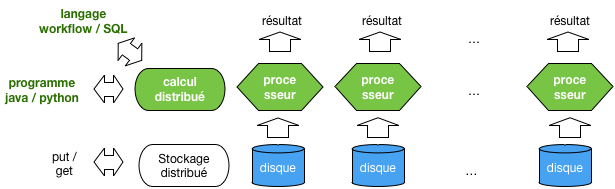
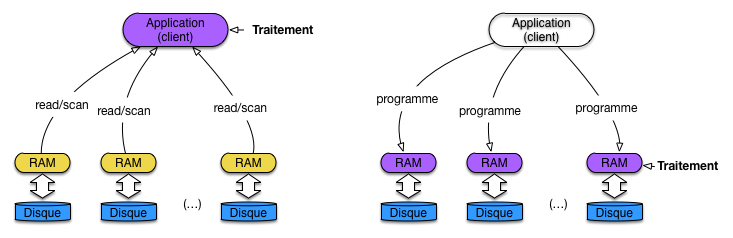
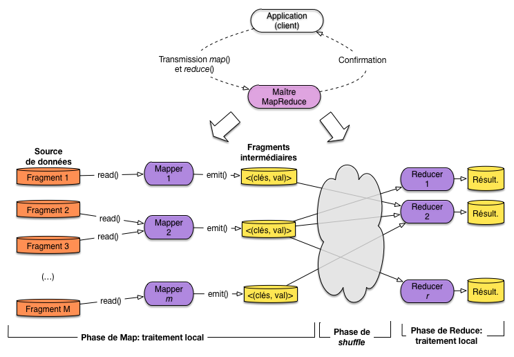
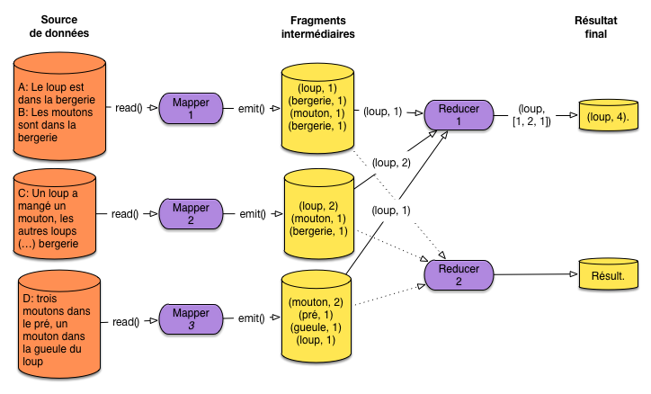
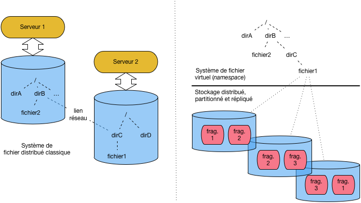
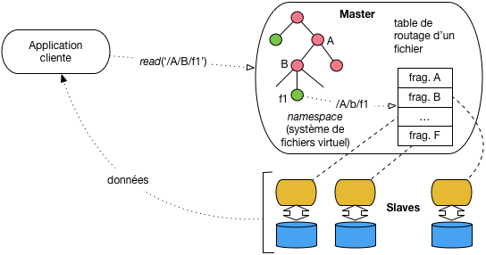
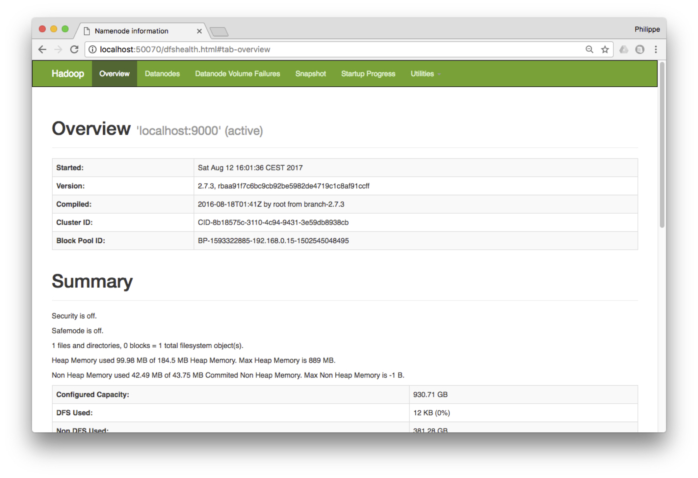
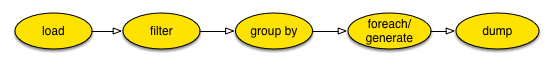
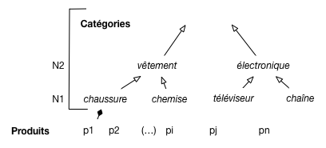

Calcul distribué: Hadoop et MapReduce¶
Nous abordons maintenant le domaine des traitements analytiques à grande échelle qui, contrairement à des fonctions de recherche qui s’intéressent à un document précis ou à un petit sous-ensemble d’une collection, parcourent l’intégralité d’un large ensemble pour en extraire des informations et construire des modèles statistiques ou analytiques.
La préoccupation essentielle n’est pas ici la performance (de toute façon, les traitements durent longtemps) mais la garantie de scalabilité horizontale qui permet malgré tout d’obtenir des temps de réponse raisonnables, et surtout la garantie de terminaison en dépit des pannes pouvant affecter le système pendant le traitement.

Fig. 87 Le calcul distribué, compagnon logique du stockage distribué¶
La Fig. 87 montre, en vert, le positionnement logique du calcul distribué par rapport aux systèmes de stockage distribué étudiés jusqu’ici. La répartition des données ouvre logiquement la voie à la distribution des traitements sur les données. L’un ne va pas sans l’autre: il serait peu utile d’appliquer un calcul distribué sur une source de données centralisée qui constituerait le goulot d’étranglement, et réciproquement.
Ce chapitre va étudier les méthodes qui permettent de distribuer des calculs à très grande échelle sur des systèmes de stockage partitionnés et distribués. Tous les systèmes vus jusqu’à présent sont des candidats valables pour alimenter des calculs distribués, mais nous allons regarder cette fois HDFS, un système de fichiers étroitement associé à Hadoop.
Pour les calculs eux-mêmes, deux possibilités sont offertes: des opérateurs intégrés à un langage de programmation, dont MapReduce est l’exemple de base, ou des langages de workflow (ou à la SQL) qui permettent des spécifications de plus haut niveau. Nous étudierons Pig latin, un des premiers représentants du genre.
Ce chapitre ne considère pas l’algorithmique analytique proprement dite, mais les opérateurs de manipulation de données qui fournissent l’information à ces algorithmes. En clair, il s’agit de voir comment récupérer des sources de données, comment les filtrer, les réorganiser, les combiner, les enrichir, le tout en respectant les deux contraintes fondamentales de la scalabilité: parallélisation et tolérance aux pannes.
La notion d’opérateur de second ordre
Les opérateurs décrits ici sont des opérateurs de second ordre. Contrairement aux opérateurs classiques qui s’appliquent directement à des données, un opérateur de second ordre prend des fonctions en paramètres et applique ces fonctions à des données au cours d’un traitement immuable (par exemple un parcours séquentiel).
Depuis 2004, le modèle phare d’exécution est MapReduce, déjà introduit dans le chapitre Interrogation de bases NoSQL dans un contexte centralisé, et distribué en Open Source dans le système Hadoop. MapReduce est le premier modèle à combiner distribution massive et reprise sur panne dans le contexte d’un cloud de serveurs à bas coûts. Ses limites sont cependant évidentes: faible expressivité (très peu d’opérateurs) et performances médiocres.
Très rapidement, des langages de plus haut niveau (Pig, Hive) ont été proposés, avec pour objectif notable l’expression d’opérateurs plus puissants (par exemple les jointures). Ces opérateurs restent exécutables dans un contexte MapReduce, un peu comme SQL est exécutable dans un système basé sur des parcours de fichier. Enfin, récemment, des systèmes proposant des alternatives plus riches à Hadoop ont commencé à émerger. La motivation essentielle est de fournir un support aux algorithmes fonctionnant par itération. C’est le cas d’un grand nombre de techniques en fouilles de données qui affinent progressivement un résultat jusqu’à obtenir une solution optimale. MapReduce est (était) très mal adapté à ce type d’exécution. Les systèmes comme Spark ou Flink constituent de ce point de vue un progrès majeur.
Ce chapitre suit globalement cette organisation historique, en commençant par MapReduce, suivi du système HDFS/Hadoop, et finalement d’une présentation du langage Pig. Les systèmes itératifs feront l’objet des chapitres suivants.
S1: MapReduce¶
Supports complémentaires
Reportez-vous au chapitre Interrogation de bases NoSQL pour une présentation du modèle MapReduce d’exécution. Rappelons que MapReduce n’est pas un langage d’interrogation de données, mais un modèle d’exécution de chaînes de traitement dans lesquelles des données (massives) sont progressivement transformées et enrichies.
Pour être concrets, nous allons prendre l’exemple (classique) d’un traitement s’appliquant à une collection de documents textuels et déterminant la fréquence des termes dans les documents (indicateur TF, cf. Recherche avec classement). Pour chaque terme présent dans la collection, on doit donc obtenir le nombre d’occurrences.
Le principe de localité des données¶
Dans une approche classique de traitement de données stockées dans une base, on utilise une architecture client-serveur dans laquelle l’application cliente reçoit les données du serveur. Cette méthode est difficilement applicable en présence d’un très gros volume de données, et ce d’autant moins que les collections sont stockées dans un système distribué. En effet:
le transfert par le réseau d’une large collection devient très pénalisant à grande échelle (disons, le TéraOctet);
et surtout, la distribution des données est une opportunité pour effectuer les calculs en parallèle sur chaque machine de stockage, opportunité perdue si l’application cliente fait tout le calcul.
Ces deux arguments se résument dans un principe dit de localité des données (data locality). Il peut s’énoncer ainsi: les meilleures performances sont obtenues quand chaque fragment de la collection est traité localement, minimisant les besoins d’échanges réseaux entre les machines.
Note
Reportez-vous au chapitre Le cloud, une nouvelle machine de calcul pour une analyse quantitative montrant l’intérêt de ce principe.
L’application du principe de localité des données mène à une architecture dans laquelle, contrairement au client-serveur, les données ne sont pas transférées au programme client, mais le programme distribué à toutes les machines stockant des données (Fig. 88).

Fig. 88 Principe de localité des données, par transfert des programmes¶
En revanche, demander à un développeur d’écrire une application distribuée basée sur ce principe constitue un défi technique de grande ampleur. Il faut en effet concevoir simultanément les tâches suivantes:
implanter la logique de l’application, autrement dit le traitement particulier qui peut être plus ou moins complexe;
concevoir la parallélisation de cette application, sous la forme d’une exécution concurrente coordonnant plusieurs machines et assurant un accès à un partitionnement de la collection traitée;
et bien entendu, gérer la reprise sur panne dans un environnement qui, nous l’avons vu, est instable.
Un framework d’exécution distribuée comme MapReduce est justement dédié à la prise en charge des deux derniers aspects, spécifiques à la distribution dans un cloud, et ce de manière générique. Le framework définit un processus immuable d’accès et de traitement, et le programmeur implante la logique de l’application sous la forme de briques logicielles confiées au framework et appliquées par ce dernier dans le cadre du processus.
Avec MapReduce, le processus se déroule en deux phases, et les « briques logicielles » consistent en deux fonctions fournies par le développeur. La phase de Map traite chaque document individuellement et applique une fonction map() dont voici le pseudo-code pour notre application de calcul du TF.
function mapTF($id, $contenu)
{
// $id: identifiant du document
// $contenu: contenu textuel du document
// On boucle sur tous les termes du contenu
foreach ($t in $contenu) {
// Comptons les occurrences du terme dans le contenu
$count = nbOcc ($t, $contenu);
// On "émet" le terme et son nombre des occurrences
emit ($t, $count);
}
}
La phase de Reduce reçoit des valeurs groupées sur la clé et applique une agrégation de ces valeurs. Voici le pseudo-code pour notre application TF.
function reduceTF($t, $compteurs)
{
// $t: un terme
// $compteurs: la séquence des décomptes effectués localement par le Map
$total = 0;
// Boucles sur les compteurs et calcul du total
foreach ($c in $compteurs) {
$total = $total + $c;
}
// Et on produit le résultat
return $total;
}
Dans ce cadre restreint, le framework prend en charge la distribution et la reprise sur panne.
Important
Ce processus en deux phases et très limité et ne permet pas d’exprimer des algorithmes complexes, ceux basés par exemple sur une itération menant progressivement au résultat. C’est l’objectif essentiel de modèles d’exécution plus puissants que nous présentons ultérieurement.
Exécution distribuée d’un traitement MapReduce¶
La Fig. 89 résume l’exécution d’un traitement (« job ») MapReduce avec un framework comme Hadoop. Le système d’exécution distribué fonctionne sur une architecture maître-esclave dans laquelle le maître (JobTracker dans Hadoop) se charge de recevoir la requête de l’application, la distribue sous forme de tâche à des nœuds (TaskTracker dans Hadoop) accédant aux fragments de la collection, et coordonne finalement le déroulement de l’exécution. Cette coordination inclut notamment la gestion des pannes.

Fig. 89 Exécution distribuée d’un traitement MapReduce¶
L’application cliente se connecte au maître, transmet les fonctions de Map et de Reduce, et soumet la demande d’exécution. Le client est alors libéré, en attente de la confirmation par le maître que le traitement est terminé (cela peut prendre des jours …). Le framework fournit des outils pour surveiller le progrès de l’exécution pendant son déroulement.
Le traitement s’applique à une source de données partitionnée. Cette source peut être un simple système de fichiers distribués, un système relationnel, un système NoSQL type MongoDB ou HBase, voire même un moteur de recherche comme Solr ou ElasticSearch.
Le Maître dispose de l’information sur le partitionnement des données (l’équivalent du contenu de la table de routage, présenté dans le chapitre sur le partitionnement) ou la récupère du serveur de données. Un nombre M de serveurs stockant tous les fragments concernés est alors impliqué dans le traitement. Idéalement, ces serveurs vont être chargés eux-mêmes du calcul pour respecter le principe de localité des données mentionné ci-dessus. Un système comme Hadoop fait de son mieux pour respecter ce principe.
La fonction de Map est transmise aux M serveurs et une tâche dite Mapper applique la fonction à un fragment. Si le serveur contient plusieurs fragments (ce qui est le cas normal) il faudra exécuter autant de tâches. Si le serveur est multi-cœurs, plusieurs fragments peuvent être traités en parallèle sur la même machine.
Exemple: le partitionnement des données pour l’application TF
Supposons par exemple que notre collection contienne 1 milliard de documents dont la taille moyenne est de 1000 octets. On découpe la collection en fragments de 64 MOs. Chaque fragment contient donc 64 000 documents. Il y a donc à peu près \(\lceil 10^9/64,000 \rceil \approx 16,000\) fragments. Si on dispose de 16 machines, chacune devra traiter (en moyenne) 1000 fragments et donc exécuter mille tâches de Mapper.
Le parallélisme peut alors être interne à une machine, en fonction du nombre de cores dont elle dispose. Une machine 4 cores pourra ainsi effectuer 4 tâches en parallèle en théorie.
Chaque mapper travaille, dans la mesure du possible, localement: le fragment est lu sur le disque local, document par document, et l’application de la fonction de Map « émet » des paires (clé, valeur) dites « intermédiaires » qui sont stockées sur le disque local. Il n’y a donc aucun échange réseau pendant la phase de Map (dans le cas idéal où la localité des données peut être complètement respectée).
Exemple: la phase de Map pour l’application TF
Supposons que chaque document contienne en moyenne 100 termes distincts. Chaque fragment contient 64 000 documents. Un Mapper va donc produire 6 400 000 paires (t, c) où t est un terme et c le nombre d’occurrences.
À l’issue de la phase de Map, le maître initialise la phase de Reduce en choisissant R machines disponibles. Il faut alors distribuer les paires intermédiaires à ces R machines. C’est une phase « cachée », dite de shuffle, qui constitue potentiellement le goulot d’étranglement de l’ensemble du processus car elle implique la lecture sur les disques des Mappers de toutes les paires intermédiaires, et leur envoi par réseau aux machines des Reducers.
Important
Vous noterez peut-être qu’une solution beaucoup plus efficace serait de transférer immédiatement par le réseau les paires intermédiaires des Mappers vers les Reducers. Il y a une explication à ce choix en apparence sous-optimal: c’est la reprise sur panne (voir plus loin).
Pour chaque paire intermédiaire, un simple algorithme de hachage permet de distribuer les clés équitablement sur les R machines chargées du Reduce.
Au niveau d’un Reducer \(R_i\), que se passe-t-il?
Tout d’abord il faut récupérer toutes les paires intermédiaires produites par les Mappers et affectées à \(R_i\).
Il faut ensuite trier ces paires sur la clé pour regrouper les paires partageant la même clé. On obtient des paires (k, [v]) où k est une clé, et [v] la liste des valeurs reçues par le Reducer pour cette clé.
Enfin, chacune des paires (k, [v]) est soumise à la fonction de Reduce.
Exemple: la phase de Reduce pour l’application TF
Supposons R=10. Chaque Reducer recevra donc en moyenne 640 000 paires (t, c) de chaque Mapper. Ces paires sont triées sur le terme t. Pour chaque terme on a donc la liste des nombres d’occurences trouvés dans chaque document par les Mappers. Au pire, si un terme est présent dans chaque document, le tableau [v] contient un million d’entiers.
Il reste, avec la fonction de Reduce, à faire le total de ces nombres d’occurences pour chaque terme.
Exemple: comptons les loups et le moutons
Vous souvenez-vous de ces quelques documents?
A:
Le loup est dans la bergerie.B:
Les moutons sont dans la bergerie.C:
Un loup a mangé un mouton, les autres loups sont restés dans la bergerie.D:
Il y a trois moutons dans le pré, et un mouton dans la gueule du loup.
Ils sont maintenant stockés dans un système partitionné sur 3 serveurs comme montré sur la Fig. 90. Nous appliquons notre traitement TF pour compter le nombre total d’occurrences de chaque terme (on va s’intéresser aux termes principaux).

Fig. 90 Un exemple minuscule mais concret¶
Nous avons trois Mappers qui produisent les données intermédiaires présentées sur la figure. Comprenez-vous pourquoi le terme bergerie apparaît deux fois pour le premier Mapper par exemple?
La phase de Reduce, avec 2 Reducers, n’est illustrée que pour le terme loup donc on suppose qu’il est affecté au premier Reducer. Chaque Mapper transmet donc ses paires intermédiaires (loup, …) à R1 qui se charge de regrouper et d’appliquer la fonction de Reduce.
Quand tous les Reducers ont terminé, le résultat est disponible sur leur disque local. Le client peut alors le récupérer.
La reprise sur panne¶
Comment assurer la gestion des pannes pour une exécution MapReduce? Dans la mesure où elle peut consister en centaines de tâches individuelles, il est inenvisageable de reprendre l’ensemble de l’exécution si l’une de ces tâches échoue, que ce soit en phase de Map ou en phase de Reduce. Le temps de tout recommencer, une nouvelle panne surviendrait, et le job ne finirait jamais.
Le modèle MapReduce a été conçu dès l’origine pour que la reprise sur panne puisse être gérée au niveau de chaque tâche individuelle, et que la coordination de l’ensemble soit également résiliente aux problèmes de machine ou de réseau.
Le Maître délègue les tâches aux machines et surveille la progression de l’exécution. Si une tâche semble interrompue, le Maître initie une action de reprise qui dépend de la phase.
Panne en phase de Reduce¶
Si la machine reste accessible et que la panne se résume à un échec du processus, ce dernier peut être relancé sur la même machine, et si possible sur les données locales déjà transférées par le shuffle. C’est le cas le plus favorable.
Dans un cas plus grave, avec perte des données par exemple, une reprise plus radicale consiste à choisir une autre machine, et à relancer la tâche en réinitialisant le transfert des paires intermédiaires depuis les machines chargées du Map. C’est possible car ces paires ont été écrites sur les disques locaux et restent donc disponibles. C’est une caractéristique très importante de l’exécution MapReduce: l’écriture complète des fragments intermédiaires garantit la possibilité de reprise en cas de panne.
Une méthode beaucoup plus efficace mais beaucoup moins robuste consisterait à ce que chaque mapper transfère immédiatement les paires intermédiaires, sans écriture sur le disque local, vers la machine chargée du Reduce. Mais en cas de panne de ce dernier, ces paires intermédiaires risqueraient de disparaître et on ne saurait plus effectuer la reprise sur panne (sauf à ré-exécuter l’ensemble du processus).
Cette caractéristique explique également la lenteur (déspérante) d’une exécution MapReduce, due en grande partie à la nécessité d’effectuer des écritures et lectures répétées sur disque, à chaque phase.
Panne en phase Map¶
En cas de panne pendant l’exécution d’une tâche de Map, on peut soit reprendre la tâche sur la même machine si c’est le processus qui a échoué, soit transférer la tâche à une autre machine. On tire ici parti de la réplication toujours présente dans les systèmes distribués: quel que soit le fragment stocké sur une machine, il existe un réplica de ce fragment sur une autre, et à partir de ce réplica une tâche équivalente peut être lancée.
Le cas le plus pénalisant est la panne d’une machine pendant la phase de transfert vers les Reducers. Il faut alors reprendre toutes les tâches initialement allouées à la machine, en utilisant la réplication.
Et le maître?¶
Finalement, il reste à considérer le cas du Maître qui est un point individuel d’échec: en cas de panne, il faut tout recommencer.
L’argument des frameworks comme Hadoop est qu’il existe un Maître pour des dizaines de travailleurs, et qu’il est peu probable qu’une panne affecte directement le serveur hébergeant le nœud-Maître. Si cela arrive, on peut accepter de reprendre l’ensemble de l’exécution, ou prendre des mesures préventives en dupliquant toutes les données du Maître sur un nœud de secours.


{kind=link}
{kind=link}
{kind=link}
{kind=link}
S2: Une brève introduction à Hadoop¶
Supports complémentaires
Un fichier de test. Auteurs/publis,
Cette session propose une introduction à l’environnement historique de programmation distribuée à grande échelle, Hadoop. Pour être tout à fait exact, Hadoop est une implantation en open source de l’architecture présentée par Google au début des années 2000, et comprenant essentiellement un système de fichiers distribué et tolérant aux pannes, GFS, et le modèle MapReduce qui s’appuie sur GFS pour effectuer un accès parallélisé à de très gros volumes de données. Un troisième composant « Google », BigTable (HBase dans la version Hadoop), propose une organisation plus structurée des données que de simples fichiers. Il n’est pas présenté ici.
Notre objectif dans cette session est de comprendre HDFS, d’y charger des données, puis de leur appliquer un traitement MapReduce. Les aspects architecturaux, brievement évoqués, devraient maintenant être clairs pour vous puisqu’ils s’appuient sur des principes standards déjà exposés.
Important
Cette session propose du code MapReduce qui a été testé et devrait fonctionner, mais l’expérience montre que la mise en œuvre de Hadoop est laborieuse et dépend de paramètres qui changent souvent: sauf si vous êtes très motivés, il est préférable sans doute de ne pas perdre de temps à chercher à reproduire les commandes qui suivent. Concentrez-vous sur les principes.
Systèmes de fichiers distribués¶
HDFS est donc la version open source du Google File System, dont le but est de fournir un environnement de stockage distribué et tolérant aux pannes pour de très gros fichiers. HDFS peut être utilisé directement comme service d’accès à ces fichiers, ou indirectement par des systèmes de gestion de données (HBase pas exemple) qui obtiennent ainsi la distribution et la résistance aux pannes sans avoir à les implanter directement.
Un système de fichiers comme HDFS est conçu pour la gestion de fichiers de grande taille (plusieurs dizaines de MOs au minimum), que l’on écrit une fois et qu’on lit ensuite par des parcours séquentiels. Le contre-exemple est celui d’une collection de très petits documents souvent modifiés: il vaut mieux dans ce cas utiliser un système NoSQL documentaire spécialisé.
Pour comprendre cette distinction, étudions les deux scénarii illustrés par
la Fig. 91. Sur la partie gauche, nous trouvons un système de fichiers
distribués classique, de type NFS (Network File System: consultez la fiche Wikipedia pour
en savoir - un peu - plus). Dans ce type d’organisation, le serveur 1 dispose d’un
système de fichiers organisé de manière hiérachique, très classiquement. La racine (/)
donne accès aux répertoires dirA et dirB, ce dernier contenant un fichier fichier2,
le tout étant stocké sur le dique local.
{kind=link}

Fig. 91 Deux types de systèmes de fichiers distribués¶
Imaginons que le serveur 1 souhaite pouvoir accéder au répertoire dirC et
fichier fichier1 qui se trouvent
sur le serveur 2. Au lieu de se connecter à distance explicitement à chaque fois,
on peut « monter » (mount) dirC dans le système de fichier du serveur 1, sous
la forme d’un répertoire-fils de dirB. Du point de vue de l’utilisateur,
l’accès devient complètement transparent. On peut accéder à /dirA/dirB/dirC
comme s’il s’agissait d’un répertoire local. L’appel réseau
qui maintient dirC dans l’espace de nommage du serveur 1 est complètement
géré par la couche NFS (ou toute autre solution équivalente).
Dans un contexte « Big Data », avec de très gros volumes de données, cette solution n’est cependant pas satisfaisante. En particulier, ni l’équilibrage (load balancing) ni le principe de localité ne sont pris en satisfaits. Premièrement, si 10% des données sont stockées dans le fichier 1 et 90% dans le fichier 2, le serveur 2 devra subir 90% des accès (en supposant une répartition uniforme des requêtes). Ensuite, un processus s’exécutant sur le serveur 1 peut être amené à traiter un fichier du serveur 2 sans se rendre compte qu’il engendre de très gros accès réseaux.
La partie droite de la Fig. 91 montre l’approche GFS/HDFS qui est totalement dédiée aux très gros fichiers et aux accès distribués. La grande différence est que la notion de fichier ne correspond plus à un stockage physique localisé, mais devient un symbole désignant un stockage partitionné, distribué et répliqué. Chaque fichier est divisé en fragments (3 fragments pour le fichier 2 par exemple), de tailles égales, et ces fragments sont alloués par HDFS aux serveurs du cluster. Chaque fragment est de plus répliqué.
Le système de fichier de vient alors un espace de noms virtuel, partagé par l’ensemble des nœuds, et géré par un nœud spécial, le maître. On retrouve, pour la notion classique de fichier, les principes généraux déjà étudié dans ce cours.
Il est facile de voir que les inconvénients précédents (défaut d’équilibrage et de localité des données) sont évités. Il est également facile de constater que cette approche n’est valable que pour de très gros fichiers qu’il est possible de partitionner en fragments de taille significative (quelques dizaines de MOs typiquement).
Architecture HDFS¶
Voici maintenant un aperçu de l’architecture de GFS (Fig. 92). Le système fonctionne en mode maître/esclave, le maître (namenode) jouant comme d’habitude le rôle de coordinateur et les esclaves (datanode) assurant le stockage. Le maître maintient (en mémoire RAM) l’image globale du système de fichiers, sous la forme d’une arborescence de répertoires et de fichiers. À chaque fichier est associée une table décrivant le partionnement de son contenu en fragment, et la répartition de ces fragments sur les différents nœuds-esclaves.
{kind=link}

Fig. 92 Architecture HDFS¶
Les applications clients doivent se connecter
au maître auquel elles transmettent leur requête sous la forme d’un
chemin d’accès à un fichier, par exemple, comme illustré sur la figure,
le chemin /A/B/f1. Voici en détail le cheminement de cette requête:
Elle est d’abord routée par le client (qui ignore tout de l’organisation du stockage) vers le maître.
Le maître inspecte sa hiérarchie, et trouve les adresses des fragments constituant le fichier.
Chaque serveur stockant un fragment est alors mis directement en contact avec le client qui peut récupérer tout ou partie du fichier.
En d’autres termes, les échanges avec le maître sont limités aux méta-données décrivant le fichier et sa répartition, ce qui évite les inconvénients d’avoir à s’adresser systématiquement à un même nœud lors de l’initialisation d’une requête. Toutes les autres commandes de type POSIX (écriture, déplacement, droits d’acc¡es, etc.) suivent le même processus.
Encore une fois la conception de HDFS est très orientée vers le stockage de fichiers de très grande taille (des GOs, voire des TOs). Ces fichiers sont partitionnés en fragments de 64 MOs, ce qui permet de les lire en parallèle. La lecture par une seule application cliente, comme illustré sur la Fig. 92, constituerait un goulot d’étranglement, mais cette architecture prend tout son sens dans le cas de traitement MapReduce, le contenu d’un fichier pouvant alors être lu en parallèle par tous les serveurs d’une grappe.
Utiliser HDFS pour de très nombreux petits fichiers serait un contresens: la mémoire RAM du maître pourrait être insuffisante pour stocker l’ensemble du namespace, et on perdrait toute possibilité de parallélisation.
HDFS fournit un mécanisme natif de tolérance aux pannes qui le rend avantageux pour des système de gestion de données qui veulent déléguer la distribution et la fiabilité du stockage. Ce mécanisme s’appuie tout d’abord sur la réplication d’un même fragment (3 exemplaires par défaut) sur différents serveurs.
Le maître assure la surveillance des esclaves par des communications (heartbeats) fréquents (toutes les secondes) et réorganise la communication entre une application cliente et le fragment qu’elle est en train de lire en cas de défaillance du serveur. Ce remplacement est utile par exemple, comme nous l’avons vu, pour un traitement MapReduce afin d’effectuer à nouveau un calcul sur l’un des fragments.
Enfin le maître lui-même est un des points sensibles du système: en cas de panne plus rien ne marcherait et des données seraient perdues. On peut mettre en place un « maître fantôme » prêt à prendre le relais, et une journalisation de toutes les écritures pour pouvoir effectuer une reprise sur panne.
Mise en œuvre avec Hadoop¶
Voici maintenant une présentation concise de la mise en œuvre d’un système HDFS L’environnement est assez lourd à mettre en place et à configurer donc nous allons aller au plus simple dans ce qui suit.
Des images Docker existent pour Hadoop mais elles ne me semblent pas plus simples à gérer qu’une installation directe, avec les options simplifiées proposées par Hadoop.
Important
Encore une fois, l’expérience montre que la lourdeur de Hadoop s’accomode mal d’un déploiement virtuel sur une seule petite machine. L’importance du sujet ne justifie pas que vous y passiez des jours en vous arrachant les cheveux. Il suffit sans doute de lire une fois cette session pour comprendre l’essentiel.
Si vous tentez quand même la mise en pratique, sachez que les commandes qui suivent supposent un environnement de type Unix (MacOS X en fait partie). Pour Windows, je ne peux que vous renvoyer au site de Hadoop, en espérant pour vous que ce ne soit pas trop compliqué.
Autre avertissement: Hadoop, c’est du Java, donc il faut au minimum savoir compiler et exécuter un programme java, et disposer d’une mémoire RAM volumineuse.
Si l’avertissement qui précède vous effraie (c’est fait pour), il vaut sans doute mieux se contenter d’une simple lecture de cette partie.
Installation et configuration¶
Je vous invite donc
à récupérer la dernière version (binaire, inutile de prendre les sources)
sur le site http://hadoop.apache.org. C’est un fichier
dont le nom ressemble à hadoop-2.7.3.tar.gz. Décompressez-le quelque part, par
exemple dans \tmp. les commandes devraient ressembler à (en utilisant bien sûr le nom
du fichier récupéré):
mv hadoop-2.7.3.tar.gz /tmp
cd /tmp
tar xvfz hadoop-2.7.3.tar.gz
Bien, vous devez alors définir une variable d’environnement HADOOP_HOME qui
indique le répertoire d’installation de Hadoop.
export HADOOP_HOME=/tmp/hadoop-2.7.3
Les répertoires bin et sbin de Hadoop contiennent des exécutables. Pour les lancer sans avoir
à se placer dans l’un de ces répertoires, ajoutez-les dans votre variable PATH.
export PATH=$PATH:$HADOOP_HOME/bin:$HADOOP_HOME/sbin
Bien, vous devriez alors pouvoir exécuter un programme Hadoop. Par exemple:
hadoop version
Hadoop 2.7.3
Pour commencer
il faut configurer Hadoop pour qu’il s’exécute en mode dit « pseudo-distribué »,
ce qui évite la configuration complexe d’un véritable cluster. Vous devez
éditer le fichier $HADOOP_HOME/etc/hadoop/core-site.xml
et indiquer le contenu suivant :
<configuration>
<property>
<name>fs.default.name</name>
<value>hdfs://localhost:9000</value>
</property>
</configuration>
Cela indique à Hadoop que le nœud maître HDFS (le « NameNode » dans la terminologie Hadoop) est en écoute sur le port 9000.
Pour limiter la réplication, modifiez également le fichier $HADOOP_HOME/etc/hadoop/hdfs-site.xml.
Son contenu doit être le suivant:
<configuration>
<property>
<name>dfs.replication</name>
<value>1</value>
</property>
</configuration>
Premières manipulations¶
Ouf, la configuration minimale est faite, nous sommes prêts à effectuer nos premières manipulations. Tout d’abord nous allons formatter l’espace dédié au stockage des données.
hdfs namenode -format
Une fois ce répertoire formatté nous lançons le maître HDFS (le namenode). Ce maître gère la hiérarchie (virtuelle) des répertoires HDFS, et communique avec les datanodes, les « esclaves » dans la terminologie employée jusqu’ici, qui sont chargés de gérer les fichiers (ou fragments de fichiers) sur leurs serveurs respectifs. Dans notre cas, la configuration ci-dessus va lancer un namenode et deux datanodes, grâce à la commande suivante:
start-dfs.sh &
Note
Les nœuds communiquent entre eux par SSH, et il faut éviter que le mot de passe soit demandé à chaque fois. Voici les commandes pour permettre une connection SSH sans mot de passe.
ssh-keygen -t rsa -P ""
cat $HOME/.ssh/id_rsa.pub >> $HOME/.ssh/authorized_keys
Vous devriez obtenir les messages suivants:
starting namenode, logging to (...)
localhost: starting datanode, logging to (...)
localhost: starting secondarynamenode, logging to (...)
Le second namenode est un miroir du premier. À ce stade, vous disposez d’un serveur HDFS en ordre de marche. Vous pouvez consulter son statut et toutes sortes d’informations grâce au serveur web accessible à http://localhost:50070. La figure Fig. 93 montre l’interface
{kind=link}

Fig. 93 Perspective générale sur les systèmes distribués dans un cloud¶
Bien entendu, ce système de fichier est vide. Vous pouvez y charger un premier fichier, à récupérer sur le site à l’adresse suivante: http://b3d.bdpedia.fr/files/author-medium.txt. Il s’agit d’une liste de publications sur laquelle nous allons faire tourner nos exemples.
Pour interagir avec le serveur de fichier HDFS, on utilise la commande hadoop fs <commande>
où commande est la commande à effectuer. La commande suivante crée un répertoire /dblp
dans HDFS.
hadoop fs -mkdir /dblp
Puis on copie le fichier du système de fichiers local vers HDFS.
hadoop fs -put author-medium.txt /dblp/author-medium.txt
Finalement, on peut constater qu’il est bien là.
hadoop fs -ls /dblp
Note
Vous trouverez facilement sur le web des commandes supplémentaires, par exemple ici: https://dzone.com/articles/top-10-hadoop-shell-commands
Pour inspecter le système de fichiers avec l’interface Web, vous pouvez aussi accéder à http://localhost:50070/explorer.html#/
Que sommes-nous en train de faire? Nous copions un fichier depuis notre machine locale vers un système distribué sur plusieurs serveurs. Si le fichier est assez gros, il est découpé en fragments et réparti sur différents serveurs. Le découpage et la recomposition sont transparents et entièrement gérés par Hadoop.
Nous avons donc réparti nos données (si du moins elles avaient une taille respectable) dans le cluster HDFS. Nous sommes donc en mesure maintenant d’effectuer un calcul réparti avec MapReduce.
MapReduce, le calcul distribué avec Hadoop¶
L’exemple que nous allons maintenant étudier est un processus MapReduce qui accède au fichier HDFS et effectue un calcul assez trivial. Ce sera à vous d’aller plus loin ensuite.
Installation et configuration¶
Depuis la version 2 de Hadoop, les traitements sont gérés par un gestionnaire
de ressources distribuées nommé Yarn. Il fonctionne en mode maître/esclaves,
le maître étant nommé Resourcemanager et les esclaves NodeManager.
Un peu de configuration préalable s’impose avant de lancer notre cluster Yarn.
Editez tout d’abord le fichier $HADOOP_HOME/etc/hadoop/mapred-site.xml
avec le contenu suivant:
<configuration>
<property>
<name>mapreduce.framework.name</name>
<value>yarn</value>
</property>
</configuration>
Ainsi que le fichier $HADOOP_HOME/etc/hadoop/yarn-site.xml:
<configuration>
<property>
<name>yarn.nodemanager.aux-services</name>
<value>mapreduce_shuffle</value>
</property>
</configuration>
Vous pouvez alors lancer un cluster Yarn (en plus du cluster HDFS).
start-yarn.sh
Yarn propose une interface Web à l’adresse http://localhost:8088/cluster: Elle montre les applications en cours ou déjà exécutées.
Notre programme MapReduce¶
Important
Toutes nos compilations java font se fait par l’intermédiaire
du script hadoop. Il suffit de définir la variable suivante au préalable:
export HADOOP_CLASSPATH=${JAVA_HOME}/lib/tools.jar
Le format du fichier que nous avons placé dans HDFS est très simple: il contient des noms d’auteur et des titres de publications, séparés par des tabulations. Nous allons compter le nombre de publications de chaque auteur dans notre fichier.
Notre première classe Java contient le code de la fonction de Map.
/**
* Les imports indispensables
*/
import java.io.IOException;
import java.util.Scanner;
import org.apache.hadoop.io.IntWritable;
import org.apache.hadoop.io.Text;
import org.apache.hadoop.mapreduce.Mapper;
/**
* Exemple d'une fonction de map: on prend un fichier texte contenant
* des auteurs et on extrait le nom
*/
public class AuthorsMapper extends
Mapper<Object, Text, Text, IntWritable> {
private final static IntWritable one = new IntWritable(1);
private Text author = new Text();
/* la fonction de Map */
@Override
public void map(Object key, Text value, Context context)
throws IOException, InterruptedException {
/* Utilitaire java pour scanner une ligne */
Scanner line = new Scanner(value.toString());
line.useDelimiter("\t");
author.set(line.next());
context.write(author, one);
}
}
Hadoop fournit deux classes abstraites pour implanter des fonctions
de Map et de Reduce: Mapper et Reducer. Il faut étendre
ces classes et implanter deux méthodes, respectivement map() et reduce().
L’exemple ci-dessus montre l’implantation de la fonction de map. Les paramètres
de la classe abstraite décrivent respectivement les types des paires
clé/valeur en entrée et en sortie. Ces types sont fournis pas Hadoop
qui doit savoir les sérialiser pendant les calculs pour les placer sur disque.
Finalement, la classe Context est utilise pour pouvoir interagir avec l’environnement
d’exécution.
Notre fonction de Map prend donc en entrée une paire clé/valeur
constituée du numéro de ligne du fichier en entrée (automatiquement engendrée par le système)
et de la ligne elle-même. Notre code se contente d’extraire la partie de la ligne
qui précède la première tabulation, en considérant que c’est le nom de l’auteur. On
produit dont une paire intermédiaire (auteur, 1).
La fonction de Reduce est encore plus simple. On obtient en entrée le nom de l’auteur et une liste de 1, aussi longue qu’on a trouvé d’auteurs dans les fichiers traités. On fait la somme de ces 1.
import java.io.IOException;
import org.apache.hadoop.io.IntWritable;
import org.apache.hadoop.io.Text;
import org.apache.hadoop.mapreduce.Reducer;
/**
* La fonction de Reduce: obtient des paires (auteur, <publications>)
* et effectue le compte des publications
*/
public class AuthorsReducer extends
Reducer<Text, IntWritable, Text, IntWritable> {
private IntWritable result = new IntWritable();
@Override
public void reduce(Text key, Iterable<IntWritable> values,
Context context)
throws IOException, InterruptedException {
int count = 0;
for (IntWritable val : values) {
count += val.get();
}
result.set(count);
context.write(key, result);
}
}
Nous pouvons maintenant soumettre un « job » avec le code qui suit. Les commentaires indiquent les principales phases. Notez qu’on lui indique les classes implantant les fonctions de Map et de Reduce, définies auparavant.
/**
* Programme de soumision d'un traitement MapReduce
*/
import org.apache.hadoop.conf.*;
import org.apache.hadoop.util.*;
import org.apache.hadoop.fs.Path;
import org.apache.hadoop.io.IntWritable;
import org.apache.hadoop.io.Text;
import org.apache.hadoop.mapreduce.Job;
import org.apache.hadoop.mapreduce.lib.input.FileInputFormat;
import org.apache.hadoop.mapreduce.lib.output.FileOutputFormat;
public class AuthorsJob {
public static void main(String[] args) throws Exception {
/* Il nous faut le chemin d'acces au fichier a traiter
et le chemin d'acces au resultat du reduce */
if (args.length != 2) {
System.err.println("Usage: AuthorsJob <in> <out>");
System.exit(2);
}
/* Definition du job */
Job job = Job.getInstance(new Configuration());
/* Definition du Mapper et du Reducer */
job.setMapperClass(AuthorsMapper.class);
job.setReducerClass(AuthorsReducer.class);
/* Definition du type du resultat */
job.setOutputKeyClass(Text.class);
job.setOutputValueClass(IntWritable.class);
/* On indique l'entree et la sortie */
FileInputFormat.addInputPath(job, new Path(args[0]));
FileOutputFormat.setOutputPath(job, new Path(args[1]));
/* Soumission */
job.setJarByClass(AuthorsJob.class);
job.submit();
}
}
Un des rôles importants du Job est de définir la source en entrée pour les données (ici un fichier HDFS) et le répertoire HDFS en sortie, dans lequel les reducers vont écrire le résultat.
Compilation, exécution¶
Il reste à compiler et à exécuter ce traitement. La commande de compilation est la suivante.
hadoop com.sun.tools.javac.Main AuthorsMapper.java AuthorsReducer.java AuthorsJob.java
Les fichiers compilés doivent ensuite être placés dans une archive java (jar)
qui sera transmise à tous les serveurs avant l’exécution distribuée. Ici, on
crée une archive authors.jar.
jar cf authors.jar AuthorsMapper.class AuthorsReducer.class AuthorsJob.class
Et maintenant, on soumet le traitement au cluster Yarn avec la commande suivante:
hadoop jar authors.jar AuthorsJob /dblp/author-medium.txt /output
On indique donc sur la ligne de commande le Job à exécuter, le fichier en entrée et le répertoire
des fichiers de résultat. Dans notre cas, il y aura un seul reducer, et donc un seul
fichier nommé part-r-00000 qui sera donc placé dans /output dans HDFS.
Important
Le répertoire de sortie ne doit pas exister avant l’exécution. Pensez à le supprimer si vous exécutez le même job plusieurs fois de suite.
hadoop fs -rm -R /output
Une fois le job exécuté, on peut copier ce fichier de HDFS vers la machine locale avec la commande:
hadoop fs -copyToLocal /output/part-r-00000 resultat
Et voilà! Vous avez une idée complète de l’exécution d’un traitement MapReduce. Le résultat devrait ressembler à:
(...)
Dominique Decouchant 1
E. C. Chow 1
E. Harold Williams 1
Edward Omiecinski 1
Eric N. Hanson 1
Eugene J. Shekita 1
Gail E. Kaiser 1
Guido Moerkotte 1
Hanan Samet 2
Hector Garcia-Molina 2
Injun Choi 1
(...)
Notez que les auteurs sont triés par ordre alphanumérique, ce qui est un effet indirect de la phase de shuffle qui réorganise toutes les paires intermédiaires.
En inspectant l’interface http://localhost:8088/cluster vous verrez les statistiques sur les jobs exécutés.
S3: langages de traitement: Pig¶
Supports complémentaires
MapReduce est un système orienté vers les développeurs qui doivent concevoir et implanter la composition de plusieurs jobs pour des algorithmes complexes qui ne peuvent s’exécuter en une seule phase. Cette caractéristique rend également les systèmes MapReduce difficilement accessibles à des non-programmeurs.
La définition de langages de plus haut niveau permettant de spécifier des opérations complexes sur les données est donc apparue comme une nécessité dès les premières versions de systèmes comme Hadoop. L’initiative est souvent venue de communautés familières des bases de données et désirant retrouver la simplicité et la « déclarativité » du langage SQL, transposées dans le domaine des chaînes de traitements pour données massives.
Cette section présente le langage Pig latin, une des premières tentatives du genre, une des plus simples, et surtout l’une des plus représentatives des opérateurs de manipulation de données qu’il est possible d’exécuter sous forme de jobs MapReduce en conservant la scalabilité et la gestion des pannes.
Pig latin (initialement développé par un laboratoire Yahoo!) est un projet Apache disponible à http://pig.apache.org. Vous avez (au moins) deux possibilités pour l’installation.
Utilisez la machine Docker https://hub.docker.com/r/hakanserce/apache-pig/
Ou récupérez la dernière version sous la forme d’une archive compressée et décompressez-la quelque part, dans un répertoire que nous appellerons
pigdir.
Nous utiliserons directement l’interpréteur de scripts (nommé grunt) qui se lance avec:
<pigdir>/bin/pig -x local
L’option local indique que l’on teste les scripts en local, ce qui permet
de les mettre au point sur de petits jeux de données avant de passer à une exécution distribuée à grande échelle
dans un framework MapReduce.
Cet interpréteur affiche beaucoup de messages, ce qui devient rapidement désagréable. Pour s’en débarasser,
créer un fichier nolog.conf avec la ligne:
log4j.rootLogger=fatal
Et lancez Pig en indiquant que la configuration des log est dans ce fichier:
<pigdir>/bin/pig -x local -4 nolog.conf
Une session illustrative¶
Pig applique des opérateurs à des flots de données semi-structurées. Le flot initial (en entrée) est constituée par lecture d’une source de données quelconque contenant des documents qu’il faut structurer selon le modèle de Pig, à peu de choses près comparable à ce que proposent XML ou JSON.
Dans un contexte réel, il faut implanter un chargeur de données depuis la source. Nous allons nous contenter de prendre un des formats par défaut, soit un fichier texte dont chaque ligne représente un document, et dont les champs sont séparés par des tabulations. Nos documents sont des entrées bibliographiques d’articles scientifiques que vous pouvez récupérer à http://b3d.bdpedia.fr/files/journal-small.txt. En voici un échantillon.
2005 VLDB J. Model-based approximate querying in sensor networks.
1997 VLDB J. Dictionary-Based Order-Preserving String Compression.
2003 SIGMOD Record Time management for new faculty.
2001 VLDB J. E-Services - Guest editorial.
2003 SIGMOD Record Exposing undergraduate students to system internals.
1998 VLDB J. Integrating Reliable Memory in Databases.
1996 VLDB J. Query Processing and Optimization in Oracle Rdb
1996 VLDB J. A Complete Temporal Relational Algebra.
1994 SIGMOD Record Data Modelling in the Large.
2002 SIGMOD Record Data Mining: Concepts and Techniques - Book Review.
...
Voici à titre d’exemple introductif un programme Pig complet qui calcule le nombre moyen de publications par an dans la revue SIGMOD Record.
-- Chargement des documents de journal-small.txt
articles = load 'journal-small.txt'
as (year: chararray, journal:chararray, title: chararray) ;
sr_articles = filter articles BY journal=='SIGMOD Record';
year_groups = group sr_articles by year;
count_by_year = foreach year_groups generate group, COUNT(sr_articles.title);
dump count_by_year;
Quand on l’exécute sur notre fichier-exemple, on obtient le résultat suivant:
(1977,1)
(1981,7)
(1982,3)
(1983,1)
(1986,1)
...
Un programme Pig est essentiellement une séquence d’opérations, chacune prenant en entrée une collection de documents (les collections sont nommées bag dans Pig latin, et les documents sont nommés tuple) et produisant en sortie une autre collection. La séquence définit une chaîne de traitements transformant progressivement les documents.
{kind=link}

Fig. 94 Un exemple de workflow (chaîne de traitements) avec Pig¶
Il est intéressant de décomposer, étape par étape, cette chaîne de traitement pour inspecter les collections intermédiaires produites par chaque opérateur.
Chargement. L’opérateur load crée une collection initiale
articles par chargement du fichier. On indique le schéma
de cette collection pour interpréter le contenu de chaque ligne.
Les deux commandes suivantes permettent d’inspecter respectivement le
schéma d’une collection et un échantillon de son contenu.
grunt> describe articles;
articles: {year: chararray,journal: chararray,title: chararray}
grunt> illustrate articles;
---------------------------------------------------------------------------
| articles | year: chararray | journal: chararray | title: chararray |
---------------------------------------------------------------------------
| | 2003 | SIGMOD Record | Call for Book Reviews.|
---------------------------------------------------------------------------
Pour l’instant, nous sommes dans un contexte simple où une collection peut être vue comme une table relationnelle. Chaque ligne/document ne contient que des données élémentaires.
Filtrage.
L’opération de filtrage avec filter opère comme une clause where en SQL. On peut exprimer
avec Pig des combinaisons Booléennes de critères sur les attributs des documents. Dans
notre exemple le critère porte sur le titre du journal.
Regroupement. On regroupe maintenant les tuples/documents par année
avec la commande group by. À chaque année on associe donc
l’ensemble des articles parus cette année-là, sous la forme d’un
ensemble imbriqué. Examinons la représentation de Pig:
grunt> year_groups = GROUP sr_articles BY year;
grunt> describe year_groups;
year_groups: {group: chararray,
sr_articles: {year: chararray,journal: chararray,title:chararray}}
grunt> illustrate year_groups;
group: 1990
sr_articles:
{
(1990, SIGMOD Record, An SQL-Based Query Language For Networks of Relations.),
(1990, SIGMOD Record, New Hope on Data Models and Types.)
}
Le schéma de la collection year_group, obtenu avec describe, comprend donc un attribut nommé group
correspondant à la valeur de la clé de regroupement (ici, l’année) et une collection
imbriquée nommée d’après la collection-source du regroupement (ici, sr_articles)
et contenant tous les documents partageant la même valeur pour la clé de regroupement.
L’extrait de la collection obtenu avec illustrate montre le cas de l’année 1990.
À la syntaxe près, nous sommes dans le domaine familier des documents semi-structurés. Si on compare avec JSON par exemple, les objets sont notés par des parenthèses et pas par des accolades, et les ensembles par des accolades et pas par des crochets. Une différence plus essentielle avec une approche semi-structurée de type JSON ou XML est que le schéma est distinct de la représentation des documents: à partir d’une collection dont le schéma est connu, l’interpréteur de Pig infère le schéma des collections calculées par les opérateurs. Il n’est donc pas nécessaire d’inclure le schéma avec le contenu de chaque document.
Le modèle de données de Pig comprend trois types de valeurs:
Les valeurs atomiques (chaînes de caractères, entiers, etc.).
Les collections (bags pour Pig) dont les valeurs peuvent être hétérogènes.
Les documents (tuples pour Pig), équivalent des objets en JSON: des ensembles de paires (clé, valeur).
On peut construire des structures arbitrairement complexes par imbrication de ces différents types. Comme dans tout modèle semi-structuré, il existe très peu de contraintes sur le contenu et la structure. Dans une même collection peuvent ainsi cohabiter des documents de structure très différente.
Application de fonctions. Un des besoins récurrents dans les chaînes de traitement est
d’appliquer des fonctions pour annoter, restructurer ou enrichir le contenu des documents passant
dans le flux. Ici, la collection finale avg_nb est obtenue en appliquant une fonction standard count().
Dans le cas général, on applique des fonctions applicatives intégrées au contexte d’exécution Pig:
ces fonctions utilisateurs (User Defined Functions ou UDF) sont le moyen privilégié de combiner
les opérateurs d’un langage comme Pig avec une application effectuant des traitements sur les documents.
L’opérateur foreach/generate permet cette combinaison.
Les opérateurs¶
La table ci-dessous donne la liste des principaux opérateurs du langage Pig. Tous s’appliquent à une ou deux collections en entrée et produisent une collection en sortie.
Opérateur |
Description |
|---|---|
|
Applique une expression à chaque document de la collection |
|
Filtre les documents de la collection |
|
Ordonne la collection |
|
Elimine lse doublons |
|
Associe deux groupes partageant une clé |
|
Produit cartésien de deux collections |
|
Jointure de deux collections |
|
Union de deux collections |
Voici quelques exemples pour illustrer les aspects essentiels du langage, basés sur le fichier http://b3d.bdpedia.fr/files/webdam-books.txt. Chaque ligne contient l’année de parution d’un livre, le titre et un auteur.
1995 Foundations of Databases Abiteboul
1995 Foundations of Databases Hull
1995 Foundations of Databases Vianu
2012 Web Data Management Abiteboul
2012 Web Data Management Manolescu
2012 Web Data Management Rigaux
2012 Web Data Management Rousset
2012 Web Data Management Senellart
Le premier exemple ci-dessous montre une combinaison de group
et de foreach permettant d’obtenir une collection avec un document
par livre et un ensemble imbriqué contenant la liste des auteurs.
-- Chargement de la collection
books = load 'webdam-books.txt'
as (year: int, title: chararray, author: chararray) ;
group_auth = group books by title;
authors = foreach group_auth generate group, books.author;
dump authors;
L’opérateur foreach applique une expression aux attributs de chaque
document. Encore une fois, Pig est conçu pour que ces expressions puissent contenir
des fonctions externes, ou UDF (User Defined Functions), ce qui permet d’appliquer n’importe quel type
d’extraction ou d’annotation.
L’ensemble résultat est le suivant:
(Foundations of Databases,
{(Abiteboul),(Hull),(Vianu)})
(Web Data Management,
{(Abiteboul),(Manolescu),(Rigaux),(Rousset),(Senellart)})
L’opérateur flatten sert à « aplatir » un ensemble imbriqué.
-- On prend la collection group_auth et on l'aplatit
flattened = foreach group_auth generate group ,flatten(books.author);
On obtient:
(Foundations of Databases,Abiteboul)
(Foundations of Databases,Hull)
(Foundations of Databases,Vianu)
(Web Data Management,Abiteboul)
(Web Data Management,Manolescu)
(Web Data Management,Rigaux)
(Web Data Management,Rousset)
(Web Data Management,Senellart)
L’opérateur cogroup prend deux collections en entrée, crée pour chacune
des groupes partageant une même valeur de clé, et associe les groupes
des deux collections qui partagent la même clé. C’est un peu compliqué en apparence;
regardons la Fig. 95. Nous avons une collection A avec
des documents d dont la clé de regroupement vaut a ou b, et une collection
B avec des documents d”. Le cogroup commence par rassembler,
séparément dans A et B, les documents partageant la même valeur de clé.
Puis, dans une seconde phase, les groupes de documents provenant des deux
collections sont assemblés, toujours sur la valeur partagée de la clé.

Fig. 95 L’opérateur cogroup de Pig.¶
Prenons une seconde collection, contenant des éditeurs (fichier http://b3d.bdpedia.fr/files/webdam-publishers.txt):
Fundations of Databases Addison-Wesley USA
Fundations of Databases Vuibert France
Web Data Management Cambridge University Press USA
On peut associer les auteurs et les éditeurs de chaque livre de la manière suivante.
--- Chargement de la collection
publishers = load 'webdam-publishers.txt'
as (title: chararray, publisher: chararray) ;
cogrouped = cogroup flattened by group, publishers by title;
Le résultat (restreint au premier livre) est le suivant.
(Foundations of Databases,
{ (Foundations of Databases,Abiteboul),
(Foundations of Databases,Hull),
(Foundations of Databases,Vianu)
},
{(Foundations of Databases,Addison-Wesley),
(Foundations of Databases,Vuibert)
}
)
Je vous laisse exécuter la commande par vous-même pour prendre connaissance du document complet. Il contient un document pour chaque livre avec trois attributs. Le premier est la valeur de la clé de regroupement (le titre du livre). Le second est l’ensemble des documents de la première collection correspondant à la clé, le troisième l’ensemble des documents de la seconde collection correspondant à la clé.
Il s’agit d’une forme de jointure qui regroupe, en un seul document, tous les documents des deux collections en entrée qui peuvent être appariés. On peut aussi exprimer la jointure ainsi:
-- Jointure entre la collection 'flattened' et 'publishers'
joined = join flattened by group, publishers by title;
On obtient cependant une structure différente de celle du cogroup, tout
à fait semblable à celle d’une jointure avec SQL, dans laquelle les informations
ont été « aplaties ».
(Foundations of Databases,Abiteboul,Fundations of Databases,Addison-Wesley)
(Foundations of Databases,Abiteboul,Fundations of Databases,Vuibert)
(Foundations of Databases,Hull,Fundations of Databases,Addison-Wesley)
(Foundations of Databases,Hull,Fundations of Databases,Vuibert)
(Foundations of Databases,Vianu,Fundations of Databases,Addison-Wesley)
(Foundations of Databases,Vianu,Fundations of Databases,Vuibert)
La comparaison entre cogroup et join montre
la flexibilité apportée par un modèle semi-structuré
et sa capacité à représenter des ensembles imbriqués. Une jointure
relationnelle doit produire des tuples « plats », sans imbrication, alors
que le cogroup autorise la production d’un état intermédiaire
où toutes les données liées sont associées dans un même document,
ce qui peut être très utile dans un contexte analytique.
Voici un dernier exemple montrant comment associer à chaque livre le nombre de ses auteurs.
books = load 'webdam-books.txt'
as (year: int, title: chararray, author: chararray) ;
group_auth = group books by title;
authors = foreach group_auth generate group, COUNT(books.author);
dump authors;
Exercices¶
Reportez-vous également au chapitre Pig : Travaux pratiques pour un ensemble d’exercices à faire sur machine.
Exercice Ex-CalcDist-1: MapReduce en distribué avec MongoDB
Vous devez avoir implanté un compteur de mots avec MongoDB dans la chapitre
Interrogation de bases NoSQL. Vous devriez également avoir engendré une collection volumineuse
et distribuée grâce au générateur de données ipsum (cf. chapitre Systèmes NoSQL: le partitionnement). Il
ne reste plus qu’à faire l’essai: lancer, en vous connectant au routeur mongos, le
calcul MapReduce dans MongoDB. Ce calculer devrait insérer le résultat dans une collection
partitionnée présente sur les différents serveurs. À vous de jouer.
Exercice Ex-CalcDist-2: un grep, en MapReduce
On veut scanner des millards de fichiers et afficher tous ceux qui contiennent une chaîne de caractères c. Donnez la solution en MapReduce, en utilisant le formalisme de votre choix (de préférence un pseudo-code un peu structuré quand même).
Exercice Ex-CalcDist-3: un rollup, en MapReduce
Une grande surface enregistre tous ses tickets de caisse, indiquant les produits vendus, le prix et la date, ainsi que le client si ce dernier a une carte de fidélité.
Les produits sont classés selon une taxonomie comme illustré sur la Fig. 96,
avec des niveaux de précision.
Pour chaque produit on sait à quelle catégorie précise de N1 il appartient (par exemple, chaussure);
pour chaque catégorie on connaît son parent.
{kind=link}

Fig. 96 Les produits et leur classement.¶
Supposons que la collection Tickets contienne
des documents de la forme (idTicket, idClient, idProduit, catégorie, date, prix).
Comment obtenir en MapReduce le total des ventes à une date d, pour le niveau N2?
On fait donc une agrégation de Tickets au niveau supérieur de la
taxonomie.
Exercice Ex-CalcDist-4: MapReduce, calcul distribué pour les nuls
MapReduce est souvent une solution brutale et inefficace (mais facile à implanter) pour des problèmes qui ont des solutions bien plus élégantes.
Par exemple: vous disposez d’une collection distribuée de très grande taille, disons des utilisateurs. Voulez calculer la valeur médiane d’une variable, l’âge, ou le solde du compte, ou n’importe quoi.
Quelle est la solution MapReduce?
Cherchez une solution qui implique beaucoup moins de transfert de données et de calcul. Regardez par exemple les suggestions proposées ici: https://www.quora.com/What-is-the-distributed-algorithm-to-determine-the-median-of-arrays-of-integers-located-on-different-computers
Exercice Ex-CalcDist-5: algèbre linéaire distribuée
Nous disposons le calcul d’algèbre linéaire du chapitre `chap-mapreduce`_. On a donc une matrice M de dimension \(N \times N\) représentant les liens entres les \(N\) pages du Web, chaque lien étant qualifié par un facteur d’importance (ou « poids »). La matrice est représentée par une collection math:C dans laquelle chaque document est de la forme {« id »: &23, « lig »: i, « col »: j, « poids »: \(m_{ij}\)}, et représente un lien entre la page \(P_i\) et la page \(P_j\) de poids \(m_{ij}\)
Vous avez déjà vu le calcul de la norme des lignes de la matrice, et celui du produit de la matrice par un vecteur \(V\). Prenons en compte maintenant la taille et la distribution.
Questions
On estime qu’il y a environ \(N=10^{10}\) pages sur le Web, avec 15 liens par page en moyenne. Quelle est la taille de la collection \(C\), en TO, en supposant que chaque document a une taille de 16 octets
Nos serveurs ont 2 disques de 1 TO chacun et chaque document est répliqué 2 fois (donc trois versions en tout). Combien affectez-vous de serveurs au système de stokage?
Maintenant, on suppose que \(V\) ne tient plus dans la mémoire RAM d’une seule machine. Proposez une méthode de partitionnement de la collection \(C\) et de \(V\) qui permette d’effectuer le calcul distribué de \(M \times V\) avec MapReduce sans jamais avoir à lire le vecteur sur le disque.
Donnez le critère de partitionnement et la technique (par intervalle ou par hachage).
Supposons qu’on puisse stocker au plus deux (2) coordonnées d’un vecteur dans la mémoire d’un serveur. Inspirez-vous de la Fig. 90 pour montrer le déroulement du traitement distribué précédent en choisissant le nombre minimal de serveurs permettant de conserver le vecteur en mémoire RAM.
Pour illustrer le calcul, prenez la matrice \(4\times4\) ci-dessous, et le vecteur \(V = [4,3,2,1]\).
\[\begin{split}M= \left[ {\begin{array}{cccc} 1 & 2 & 3 & 4 \\ 7 & 6 & 5 & 4 \\ 6 & 7 & 8 & 9 \\ 3 & 3 & 3 & 3 \\ \end{array} } \right]\end{split}\]
Expliquez pour finir comment calculer la similarité cosinus entre \(V\) et les lignes \(L_i\) de la matrice.

Ce cours de Philippe Rigaux est mis à disposition selon les termes de la licence Creative Commons Attribution - Pas d’Utilisation Commerciale - Partage dans les Mêmes Conditions 4.0 International.
Table Of Contents
- Introduction
- Préliminaires: Docker
- Modélisation de bases NoSQL
- Interrogation de bases NoSQL
- MapReduce, premiers pas
- Cassandra - Travaux Pratiques
- MongoDB - Travaux Pratiques
- Introduction à la recherche d’information
- Recherche d’information : l’indexation
- Recherche avec classement
- Recherche d’information - TP ElasticSearch
- Recherche d’information - TP ElasticSearch : pertinence
- Le cloud, une nouvelle machine de calcul
- Systèmes NoSQL: la réplication
- Systèmes NoSQL: le partitionnement
- Calcul distribué: Hadoop et MapReduce
- Traitement de données massives avec Apache Spark
- Traitement de flux massifs avec Apache Flink
- Pig : Travaux pratiques
- Projets NFE204
- Annales des examens
Recherche
Saisissez un ou plusieurs mots-clés.